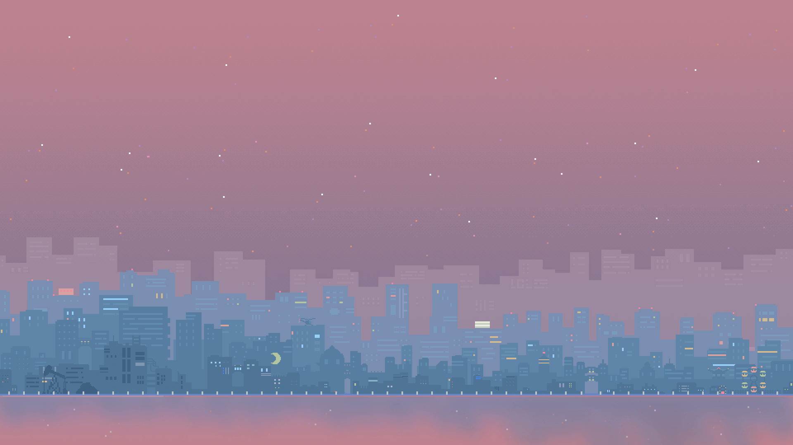

Welcome to
FlipIt!
A website turned into a Flip it book! Why is reaading so important? We have to read everyday, whether it's from books, messages, or even from this website. Want to read more?-- Here are some book recommendations, best-selling books, and other resources. Just Flip It to learn more!